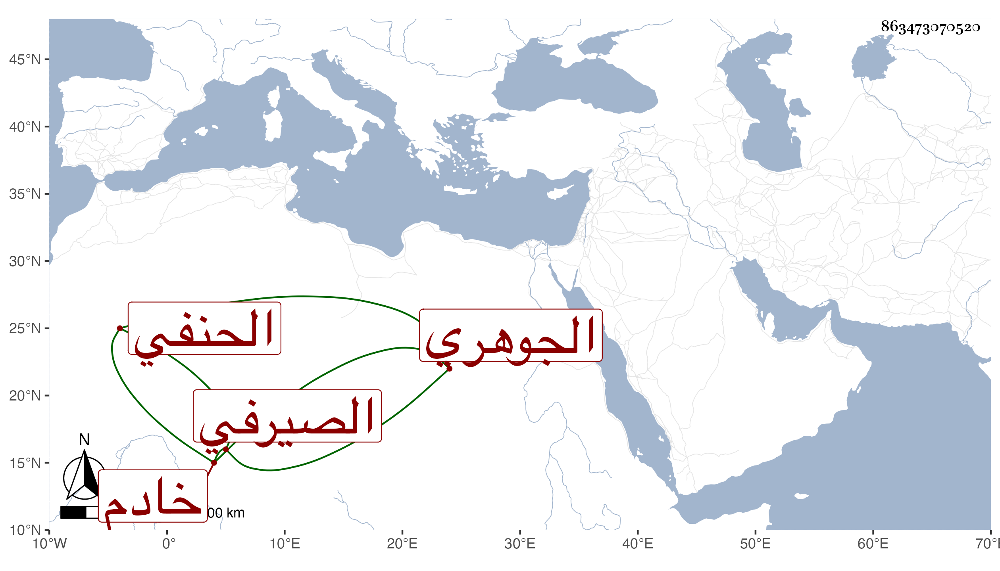

0902Sakhawi.DawLamic.ITO20230111-ara1.EIS1600.863473070520
Biography ID: 863473070520
الجوهري علي بن داود الصيرفي وأحمد بن اسمعيل بن إبرهيم الحنفيان من النواب ومحمد بن قاسم بن أبي بكر بن مؤمن الحنفي من أهل خانقاه سرياقوس والشهاب أحمد بن محمد بن عز الدين محمد الحنفي خادم البرقوقية بل شيخ الأزبكية والمختص بسالم والشمس محمد بن الشهير بابن الفقاعي صهر ولد أخي البدر وابنه وفا وتقي الدين أحد الموقعين بحانوت المالكية من باب الشعرية .
